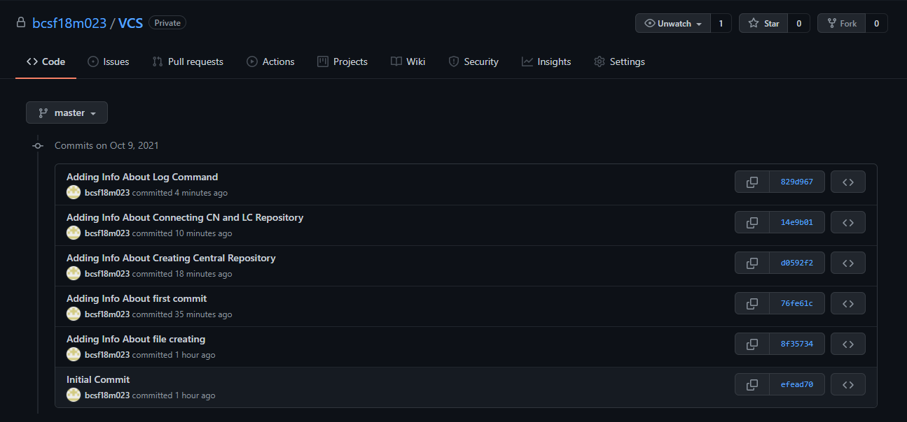

First we initialize the folder in which we want to create our local repositoy.
Then we create a file in our initialized folder using "Touch"command. The created file is added in the stagging area using Add command. After that we execute Commit command to make the changes permanent.
After adding these information the commit is again done using the same command with some suitable message. And after each modification, the commit command is used in the same way to make changes permanent.
In order to connect our local repositery to central repositry available on web we need to create a repository on our github account. After that name your repositery and create it.
Copy the url of central repository and remotly connect it with your local repository. And push all your work on Central Repository using Push command.
If we want to check all the versions of files commited earlier we can use Log command.
If we want the previous version of the file or before that we can easily check them using central repositery.
Extended view of last Commit